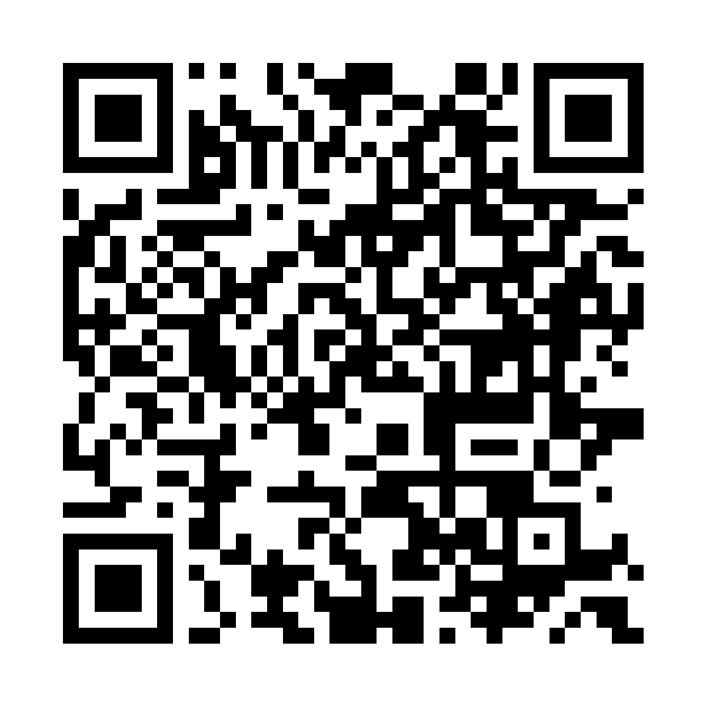

防災訓練や講座で、外国の方向けの無料防災アプリをお知らせいただけませんか
Jishin Sensei（地震先生）｜国際交流協会など、外国人住民の防災に関わる方へ
無料・広告なしの地震防災アプリです。アカウント登録は不要です。英語・日本語・韓国語・中国語（簡体字・繁体字）に対応しています。なお、iPhone・iPad 用で、Android 版はありません。個人の制作物で、販売や勧誘ではありません。

お願いは 1 つです
当日、スライドか紙を 1 枚見せて、このアプリを参加者にお知らせください。1 分ほどで済みます。
スライド・印刷した紙・掲示板・スタッフの方のスマホの画面など、やりやすい形で構いません。
- 話す内容は、下の「話すときのひとこと」で足ります。
- ほかにお願いすることはありません。ホームページへの掲載やリンク、後援、実施後のご報告も要りません。
- 参加者に合わないと思われたら、見送っていただいて構いません。ご連絡も不要です。
どんな場で使えるか
- 外国人住民向けの防災訓練・防災教室・防災イベント
- 日本語教室や交流会の、防災を扱う回
- 災害時の通訳ボランティアの研修や説明会
向いているのは、英語・韓国語・中国語のどれかが読め、iPhone・iPad をお持ちの参加者です。日本人のスタッフや通訳ボランティアの方も使えます。日本語で使うと、コミュニケーションカードが、外国の方に見せて答えてもらう使い方に切り替わります。相手の端末にアプリは要りません。
5 分の手順（時間があれば）
お願いは、最初の①だけです。②〜④は、時間がとれる場合や、担当の方が事前に試すときにお使いください。通して 5 分ほどです。
① スライドか紙でお知らせする（1 分ほど）
スライドか紙で QR コードを示し、下の「話すときのひとこと」を添えます。iPhone・iPad のカメラを向けると表示が出て、タップすると App Store が開きます。
② その場で入れてもらう（1〜2 分）
「入手」を押してもらいます。Face ID や Apple ID のパスワードの確認が出ることがあります。入れるときは通信が要ります。（会場の Wi-Fi があれば、あわせてご案内ください）③と④は、電波がなくても試せます。
③ 言語を確かめ、緊急時タブを開く（1 分ほど）
言語を選ぶ画面は出ず、端末の言語で開きます。（英語・日本語・韓国語・中国語以外の端末では英語）変えるときは、右端の「設定」タブのいちばん上の「言語」です。端末を日本語にしている方には、ここで English などを選んでもらってください。
次に、画面の下の左から 3 つ目の「緊急時」タブを開いてもらいます。いちばん上の「揺れを感じたら」を開くと、揺れている間・直後・その後にやることが、ひと目で分かります。その下に、場所別の動きと 110・119・118 などの番号があります。この画面は電波がなくても開けます。番号はタップすると電話をかける操作になるので、練習では押さないようお伝えください。
④ 日本人のスタッフとコミュニケーションカードを 1 枚試す（1〜2 分）
参加者の画面だけで試せます。スタッフの方のスマホは要りません。
- 参加者：英語の画面では、「Prepare」タブのいちばん上の「Communication cards」を開き、「Safety check」の「Where is the evacuation shelter? Could you point the way?」をタップします。大きな日本語の文が出るので、その画面をスタッフに見せます。
- スタッフ：日本語を読み、下の答えから「あちらです（指さします）」などをタップします。答えの下に、参加者の言語の訳が出ます。
スタッフの方もアプリを入れている場合は、日本人の側から見せる使い方も試せます。日本語の画面の「サポート」タブで「コミュニケーションカード」を開き、最初のカード「大丈夫ですか？」をタップします。カードの上のボタンで相手が読める言語を選んで見せると、相手は「I'm OK」「I am injured」などの答えを指して返します。
参加者の画面での名前：
| 画面の言語 | 緊急時タブ | サポートタブ | カードの入口 | 言語の設定（右端のタブ） |
|---|---|---|---|---|
| 英語 | Emergency | Prepare | Communication cards | Settings → Language |
| 韓国語 | 긴급 | 준비 | 커뮤니케이션 카드 | 설정 → 언어 |
| 中国語（簡体字） | 紧急时 | 准备 | 沟通卡片 | 设置 → 语言 |
| 中国語（繁体字） | 緊急時 | 準備 | 溝通卡片 | 設定 → 語言 |
アプリについて
- 料金：機能はすべて無料です。任意のチップがありますが、払っても使える機能は増えません。広告はなく、アカウント登録も不要です。
- 対応端末：iPhone・iPad 用で、Android 版はありません。
- 言語：英語・日本語・韓国語・中国語（簡体字・繁体字）。ほかの言語の端末では、英語で表示します。ベトナム語・ネパール語・インドネシア語・ポルトガル語と、やさしい日本語には対応していません。
- 中身：「今日」タブは、地震のときの行動を問う毎日 1 問のクイズです。（全 68 問。すべてに解説と出典があります）「サポート」タブには、コミュニケーションカード・健康カード・貼り紙辞書があります。「緊急時」タブには、揺れを感じたらやること、場所別の動き、緊急通報の番号、災害用伝言ダイヤル 171 などがまとまっています。
- 電波がないとき：「緊急時」タブ、コミュニケーションカード、貼り紙辞書は、電波がなくても開けます。読み上げは、端末にその言語の声が入っていれば使えます。
- 位置づけ：公的機関のアプリではなく、Makoto Katano による個人の制作物です。出典に挙げた公的機関の承認も受けていません。地震の速報（警報）は出しません。速報の通知には、観光庁監修の Safety tips もあわせてお勧めください。（アプリの中でも、入れておくよう案内しています）
よくある質問
Q. 個人のアプリを紹介してよいか、判断が難しいです。
公的機関のアプリではなく、個人の制作物です。個人では、日本で暮らす外国の方に届ける手段が限られるため、防災の場をお持ちの皆さまにご相談しています。お願いは当日参加者にお知らせいただくことだけで、後援や推薦、ホームページへの掲載はお願いしていません。Safety tips（観光庁監修）などと並べて、「個人が作った無料アプリの一例」としてご紹介いただければ十分です。
Q. App Store に App 内課金の表示があります。販売ではありませんか。
販売ではありません。緊急時に要るものを有料にしないため、機能はすべて無料にしています。App 内課金の表示は、任意のチップのものです。チップの案内は、クイズを続けて解いたときなどに出ることがありますが、払っても使える機能は増えません。「緊急時」タブと「サポート」タブには出しません。
Q. Android をお使いの参加者が多いのですが。
Android 版はありません。ただ、コミュニケーションカードなら、アプリが要るのは片側だけです。日本人のスタッフやボランティアの iPhone・iPad に入っていれば、相手の端末にアプリがなくても、英語・韓国語・中国語でカードを見せられます。
Q. ベトナム語やネパール語の参加者が中心です。
どちらも対応していません。英語・韓国語・中国語が読める方が少ない場合は、無理にご紹介いただかなくて構いません。
Q. 旅行者向けのアプリではありませんか。
日本で暮らす方も使えます。揺れたときの行動や避難、緊急通報は、旅行中でも暮らしていても同じです。助けを求めるカードでは、「助けてください。私は日本に住んでいますが、日本語があまり話せません」という言い方も選べます。
Q. 内容の正確さは。
68 問すべてに出典があり、そのうち 57 問は国の機関・日本政府観光局（JNTO）・東京都のページです。出典のリンクが開けるかと、解説の根拠になる一文が今も出典のページに載っているかを、毎週自動で確かめています。教育用のアプリで、実際の緊急時には現地の当局の指示に従うよう、アプリの中でもお伝えしています。
Q. 個人情報は扱いますか。
アカウント登録は不要で、お名前やメールアドレスを求めることはありません。健康カードなどに入力した内容は、開発者やサーバーに送られません。内容の更新とチップの処理のため、限られた技術的な情報を受け取るサービスがあります。詳しくはプライバシーポリシーをご覧ください。
Q. 紙やスライドを用意できません。
このページの QR コードの画像を、スタッフの方のスマホやタブレットに出して見せていただくだけで構いません。アプリを入れたスタッフの方なら、日本語の画面の「設定」タブの「このアプリについて」にある「このアプリを教える」でも出せます。（「コミュニケーションカード」の一覧の「このアプリを外国の方に教える」からも開けます）QR コードの下には、読み取り方の一文が 5 言語で出ます。入れた直後はこのボタンが出ないことがあるので、そのときは、通信のある所でアプリを一度閉じて、開き直してください。
Q. 参加者からアプリのことを聞かれたら。
分かる範囲で構いません。使い方のご質問や内容のご指摘は、開発者がお問い合わせフォームで受けます。協会の方に対応をお願いすることはありません。
素材


この QR コードと、このページのボタンのリンクには、ここから入れた件数を数えるための印（個人を特定しない集計用）が付いています。分かるのは全体の件数だけで、誰が入れたかも、どの会場からかも分かりません。
スライド・配布用の紹介文
Jishin Sensei（地震先生） 地震のときの行動を、毎日 1 問のクイズで学べるアプリです。無料・広告なし。緊急時の画面は、電波がなくても開けます。英語・日本語・韓国語・中国語に対応。iPhone・iPad 用で、Android 版はありません。
Jishin Sensei
A free iPhone and iPad app for earthquake safety in Japan, in English, Japanese, Korean and Chinese. No ads. There is no Android version.
話すときのひとこと（スタッフの方向け）
無料の地震防災アプリを 1 つご紹介します。iPhone か iPad の方は、この QR コードをカメラで読んでください。入れたら、画面の下の「緊急時」、英語の画面では「Emergency」を開いてみてください。電波がなくても開けます。
QR コードに添える 5 言語の一文（アプリの画面と同じ文）
Scan with your iPhone or iPad camera to get this app for free. iPhone・iPad のカメラで読むと、このアプリを無料で入れられます。 이 앱을 무료로 설치하려면 iPhone이나 iPad 카메라로 스캔하세요. 用 iPhone 或 iPad 相机扫描，即可免费获取这个应用。 用 iPhone 或 iPad 相機掃描，即可免費取得這個 App。
お問い合わせ
ご質問やご相談は、お問い合わせフォームからお送りください。（日本語でも英語でも構いません）メールでご案内した協会の方は、そのメールへのご返信でも構いません。